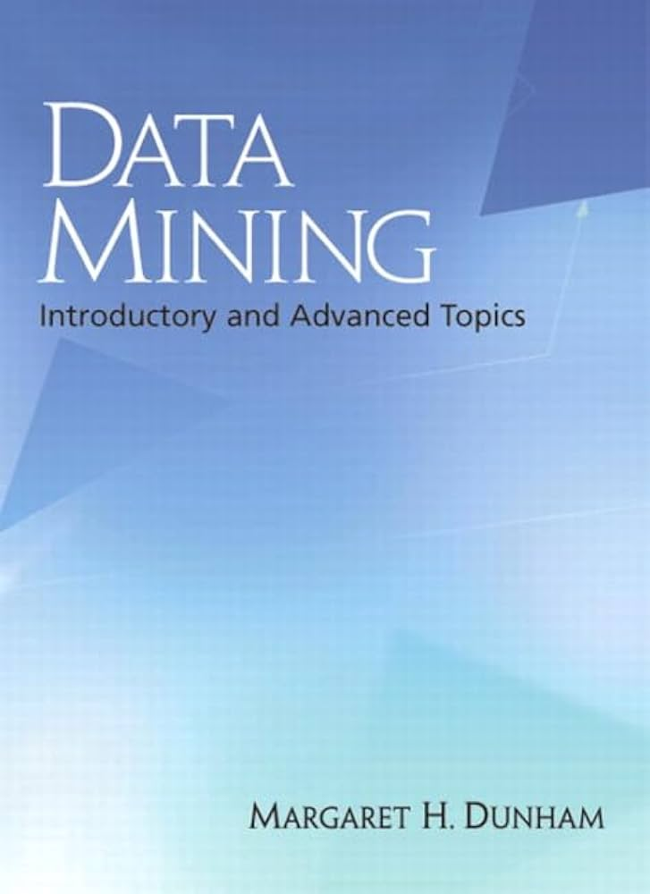
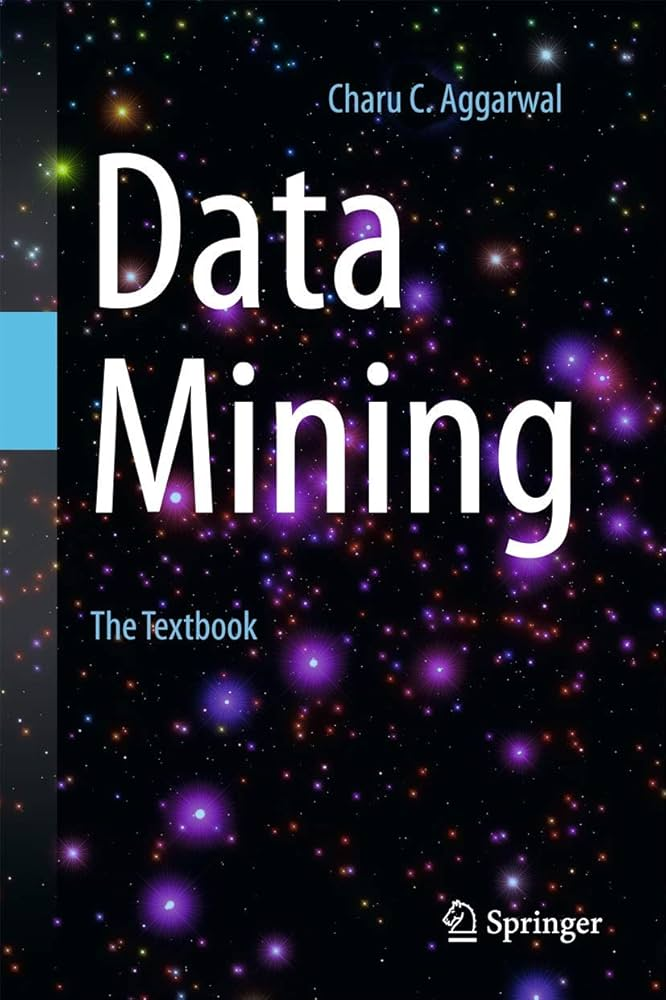
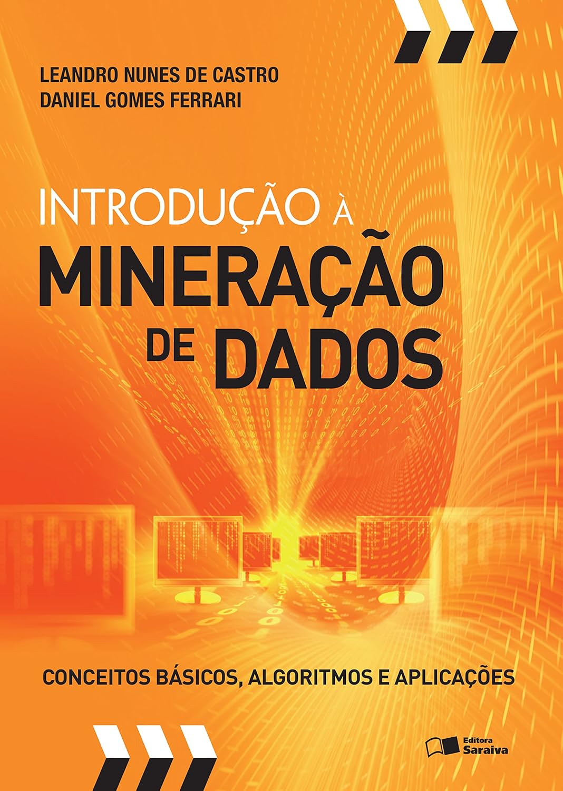
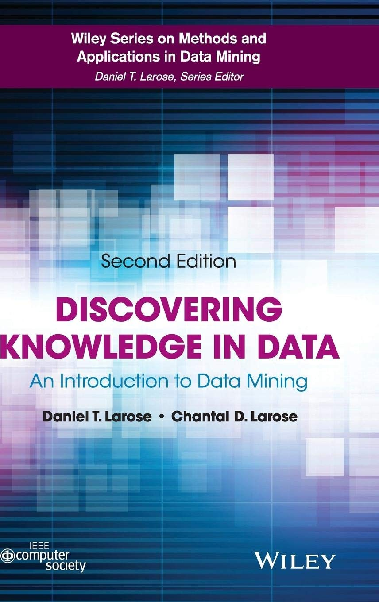

Apresentação da Disciplina e Introdução à mineração de dados
ESTAT0109 – Mineração de Dados em Estatística
Prof. Dr. Sadraque E. F. Lucena
sadraquelucena@academico.ufs.br
http://sadraquelucena.github.io/mineracao
Canais de Comunicação e Materiais da Disciplina
Grupo no WhatsApp: http://tiny.cc/wppmineracao
Informações da disciplina
- Componente curricular: ESTAT0109 – Mineração de Dados em Estatística
- Tipo: Disciplina optativa
- Carga horária: 60 horas (4 créditos)
- Horário:
- Terças e Quintas - 17h00 às 18h30
- Docente: Prof. Dr. Sadraque E. F. Lucena
Objetivo da Disciplina
Capacitar os(as) alunos(as) a aplicar técnicas estatísticas e computacionais para extrair padrões e conhecimentos úteis a partir de conjuntos de dados.
Ementa
- Análise estatística em grandes bancos de dados.
- Tratamento de dados para processos de Data Mining.
- Principais funcionalidades, técnicas e algoritmos.
- Análise de associações.
- Classificação de dados.
- Árvores de decisão.
- Regressão Logística.
- Redes Neurais.
- Segmentação e Análise de Cluster.
- Estudo de casos.
Conteúdo Programático
Parte 1: Fundamentos
1.1. Fundamentos da Mineração de Dados
1.2. Pré-processamento de dados
1.2.1. Exploração
1.2.2. Limpeza
1.2.3. Transformação
1.2.3. Redução
Parte 2: Aprendizado Não Supervisionado
2.1. Regras de Associação
2.2.\(k\)-means
Conteúdo Programático
Parte 3: Aprendizado Supervisionado
3.1. Regressão
3.1.1. Regressão linear
3.1.2. Regressão logística
3.2. \(k\)-Nearest Neighbors
3.3. Naive Bayes
3.4. Árvores de Decisão
3.5. Florestas aleatórias
3.6. Support Vector Machine
Conteúdo Programático
Parte 3: Aprendizado Supervisionado (continuação)
3.7. Avaliação de desempenho
3.7.1. Validação Cruzada
3.7.2. Amostragem bootstrap
3.7.3. Acurácia
3.7.4. Kappa
3.7.5. Precisão e revocação
3.7.6. Sensibilidade e especificidade
3.8. Ajuste de parâmetros
3.9. Métodos de conjunto (ensemble methods)
3.9.1. Bagging
3.9.2. Boosting
3.9.3. Stacking
Avaliação
A avaliação do aprendizado será realizada por meio de um portfólio de projetos práticos, composto por:
- Mini-Projetos: Estudos de casos práticos ao longo do semestre, com relatórios curtos descrevendo a preparação dos dados, aplicação dos algoritmos e interpretação dos resultados.
- Projeto Final Integrador: Relatório final consolidando as análises, com comparação crítica entre modelos, avaliação de desempenho e recomendação do modelo mais adequado ao problema.
Datas Importantes
Não haverá aula:
- 20/Nov/25: Dia Nacional de Zumbi e da Consciência Negra (feriado nacional)
- 25 e 27/Nov/25: XI SEMAC
- 22 a 31/12/2025: Recesso de final de ano
- 01/01/2026: Confraternização Universal (feriado nacional) e Aniversário de São Cristóvão (feriado municipal)
- 02 a 10/01/2026: Férias coletivas para docentes
Bibliografia Recomendada
Básica




Bibliografia Recomendada
Complementar



Ferramentas

Mineração de Dados e o Processo de Descoberta de Conhecimento (KDD)
O que é Mineração de Dados?
- Mineração Tradicional: processo de mineração tradicional, que busca extrair materiais valiosos (ouro, pedras preciosas) de uma mina.
- Mineração de Dados:
- A Mina → A Base de Dados
- As Ferramentas → Os Algoritmos
- Os Minerais Preciosos → O Conhecimento
A Hierarquia de Valor: Dados, Informação e Conhecimento
- Para que a Mineração de Dados faça sentido, precisamos entender como o valor é agregado em cada nível.
- Dados: Nível base. São símbolos ou signos brutos, não estruturados e sem significado isolado (Ex: o valor “28”).
- Informação: Dados com significado e utilidade. Contexto é adicionado (Ex: “A temperatura do ar é 28°C”).
- Conhecimento: É a compreensão obtida a partir da informação, permitindo a tomada de decisão e a agregação de valor. (Ex: “Saber que fará 28°C em Aracaju no fim de semana pode influenciar a decisão de ir à praia”).
Exemplos
Casos em que a mineração de dados geralmente agrega valor:
Descobrir anomalias em registros de sistema e aplicativos que podem indicar um incidente de cibersegurança;
Prever as vendas de produtos com base nas condições de mercado e ambientais;
Recomendar o próximo filme que um cliente pode querer assistir com base em sua atividade passada e nas preferências de clientes semelhantes;
Definir os preços dos quartos de hotel com bastante antecedência com base na demanda prevista.
KDD
A mineração de dados é uma etapa fundamental de um processo mais abrangente conhecido pela sigla KDD.
- KDD (Knowledge Discovery in Databases | Descoberta de Conhecimento em Bases de Dados): Processo completo e abrangente de extrair conhecimento útil de dados.
- Envolve desde a coleta e limpeza dos dados até a validação final dos padrões encontrados.
- Suas etapas incluem: seleção, integração, limpeza, transformação, mineração e avaliação.
- Mineração de Dados: Etapa fundamental no processo KDD.
- Aplicação de algoritmos (computacionais e estatísticos) para identificar padrões nos dados já preparados.
Processo KDD: Visão Geral
O processo KDD consiste em quatro etapas:
- Base de Dados: Ponto de partida. É uma coleção organizada de dados brutos sobre um conjunto de itens.
- Preparação ou Pré-processamento: A etapa de preparação e limpeza dos dados para garantir a qualidade da análise.
- Mineração de Dados: A fase de “escavação”, onde algoritmos são aplicados para buscar padrões e extrair conhecimento.
- Avaliação ou Validação do Conhecimento: A fase final, que filtra e valida se os padrões encontrados são realmente úteis e valiosos.
- Muitas vezes, após a avaliação (etapa 4), é preciso retornar a etapas anteriores para refinar a análise.
A Etapa Mais Crítica: Pré-processamento
Esta etapa visa preparar os dados para uma análise eficiente:
- Limpeza: Tratamento de dados inconsistentes ou faltantes (missing values).
- Integração: Combinação de dados de múltiplas fontes (planilhas, bancos de dados diferentes).
- Seleção: Escolha dos dados e variáveis (atributos) mais relevantes(redução de dimensionalidade).
- Transformação: Consolidação dos dados em formatos apropriados para a mineração (ex: normalização, padronização, agregação).
Mineração (Coração do Processo)
Nesta fase, algoritmos são aplicados aos dados já preparados para extrair padrões.
- Agrupamento (Clusterização): Divide os dados em grupos semelhantes entre si e distintos dos demais.
- Predição: Constrói modelos para prever valores futuros. Classificação prevê uma categoria, enquanto Estimação (ou Regressão) prevê um valor contínuo.
- Regras de Associação: Descobre atributos que ocorrem juntos com frequência, como no exemplo “quem compra pão também compra manteiga”.
- Detecção de Anomalias: Identifica registros fora do padrão, úteis para detectar fraudes ou defeitos.
Avaliação e Validação do Conhecimento
Nem todo padrão encontrado por um algoritmo é útil. Esta etapa filtra os resultados para garantir que o conhecimento gerado seja valioso. As perguntas a serem respondidas incluem:
- O padrão é estatisticamente significativo ou ocorreu ao acaso?
- Ele é novo e surpreendente ou apenas confirma algo que já sabíamos?
- É compreensível para o especialista do domínio ou para quem toma decisão?
- Ele pode ser usado para embasar uma decisão que trará benefícios (aumento de receita, redução de custos, etc.)?
- O objetivo é separar o conhecimento útil de padrões irrelevantes.
Mineração de Dados é Interdisciplinar
- Estatística: Fornece a base para modelagem, testes de hipóteses e validação.
- Aprendizagem de Máquina e IA: Oferece um vasto arsenal de algoritmos.
- Ciência da Computação: Lida com Bancos de Dados, eficiência de algoritmos e computação de alto desempenho.
- Visualização de Dados: Essencial para a interpretação e comunicação dos resultados.
Principais Termos da Área
- A área de Mineração de Dados possui uma vasta quantidade de técnicas e algoritmos.
- Foi desenvolvida ao longo de décadas por diferentes grupos:
- Pesquisadores acadêmicos
- Empresas de tecnologia
- Consultores
- Essa diversidade de origens e inspirações (da estatística à biologia) gerou diferentes nomenclaturas para contextos muitas vezes similares.
- É importante estarmos familiarizados com as nomenclaturas mais utilizadas.
Inteligência Artificial (IA) Clássica
- Definição: A ciência e engenharia de criar máquinas inteligentes, especialmente programas de computador.
- Inspiração Principal: A inteligência humana (percepção, resolução de problemas, comunicação).
- Abordagem Central: Era simbólica e baseada em lógica.
- Conhecimento era representado por símbolos e regras.
- O sistema inteligente era construído codificando-se o conhecimento de um especialista.
- Exemplo: Sistemas Especialistas (Expert Systems).
Se tosse E febre E dor de cabeça, ENTÃO gripe.
Inteligência Computacional
- Origem: Surgiu de uma discordância com a IA Clássica.
- A IA Clássica teve dificuldade em cumprir promessas ambiciosas (robôs autônomos, etc.).
- Novas abordagens, com formas de operação diferentes, precisavam de um novo nome.
- Foco: Técnicas não-simbólicas, muitas vezes inspiradas em fenômenos biológicos.
- Pilares da Inteligência Computacional:
- Redes Neurais Artificiais
- Sistemas Nebulosos (Fuzzy Systems)
- Algoritmos Evolutivos
Aprendizagem de Máquina
- Definição: Área que desenvolve programas capazes de melhorar seu desempenho automaticamente por meio da experiência.
- Fonte da Experiência: Dados.
- Ideia Central: Em vez de programar regras explícitas, o sistema aprende os padrões diretamente dos dados.
- Relação: Está intimamente ligada à Mineração de Dados, Estatística e Inteligência Artificial.
- Foco Principal: Extrair informação e conhecimento a partir de dados de forma automática.
Aplicações no Mundo Real
- Recomendação de Filmes e Produtos: A Netflix aprende seus gostos (Aprendizagem de Máquina) para sugerir novos filmes.
- Diagnóstico Médico por Imagem: Sistemas analisam tomografias para identificar padrões de doenças, aprendendo com milhares de exames anteriores (Redes Neurais).
- Detecção de Fraude em Cartão de Crédito: O sistema aprende o padrão de gastos do cliente (Aprendizagem de Máquina) e sinaliza transações que fogem desse padrão.
- Otimização de Rotas de Entrega: Algoritmos inspirados em colônias de formigas (Computação Natural) encontram os caminhos mais eficientes.
Como as Máquinas Aprendem?
- Aprendizado Supervisionado:
- O algoritmo treina com um conjunto de dados que já possui as respostas corretas (rótulos).
- Exemplo: Prever o preço de um imóvel usando uma base de dados com o preço de imóveis já vendidos.
- Aprendizado Não Supervisionado:
- O algoritmo recebe dados sem respostas ou rótulos.
- A tarefa é encontrar padrões, estruturas ou grupos ocultos nos dados.
- Exemplo: Agrupar clientes de um supermercado em segmentos com base em seus hábitos de compra.
Computação Natural
- Definição: Um termo “guarda-chuva” para descrever técnicas que se relacionam com a natureza.
- Inspiração: Fenômenos naturais, que vão além da inteligência humana.
- Exemplos: Evolução das espécies, sistema imunológico, comportamento de enxames (formigas, abelhas), construção de ninhos por cupins.
- Abrangência:
- Métodos inspirados na natureza para resolver problemas.
- Algoritmos Evolutivos, Inteligência de Enxame.
- Métodos inspirados na natureza para resolver problemas.
- Métodos que usam a natureza para computar. - Computação com moléculas (DNA), Computação Quântica.
A Mesma Ideia, Nomes Diferentes
Muitos conceitos de Mineração de Dados e Aprendizagem de Máquina têm um equivalente direto na Estatística. A base matemática é frequentemente a mesma.
- Instância (Instance)
- Observação ou Ponto Amostral
- Uma unidade amostral ou indivíduo (equivale a uma linha em uma tabela).
- Atributo (Attribute / Feature)
- Variável Independente ou Variável Explicativa (preditor)
- É a variável que usamos para fazer uma previsão (equivale a uma coluna em uma tabela).
A Mesma Ideia, Nomes Diferentes
- Rótulo ou Atributo-Alvo (Label / Target)
- Variável Dependente ou Variável Resposta
- É a variável que o modelo estatístico tenta prever ou explicar.
- Modelo (Model)
- Modelo estatístico ou algoritmo computacional criado que será usado para fazer novas previsões.
- Pode ser, por exemplo, uma árvore de decisão, uma rede neural ou um modelo de regressão logística.
A Mesma Ideia, Nomes Diferentes
- Treinamento (Training)
- Ajuste do Modelo ou Estimação de Parâmetros
- É o processo de usar os dados para encontrar os melhores coeficientes (parâmetros) do modelo (Ex: método de mínimos quadrados em uma regressão).
- Diferença sutil no foco:
- A Estatística Clássica frequentemente enfatiza a inferência, ou seja, entender e explicar a relação entre as variáveis.
- A Mineração de Dados e Aprendizagem de Máquina geralmente priorizam a capacidade de predição do modelo em dados futuros, mesmo que o modelo seja uma “caixa-preta”.
Fim
Aula baseada no material: CASTRO, Leandro N.; FERRARI, Daniel G. Introdução à mineração de dados: conceitos básicos, algoritmos e aplicações. São Paulo : Saraiva, 2016.